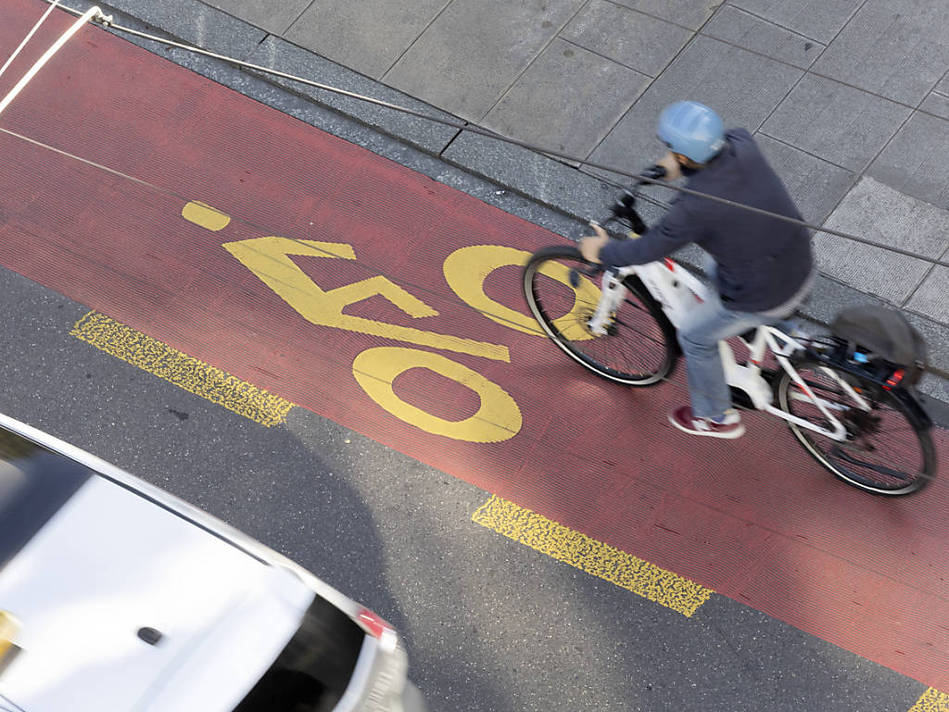

üö¥Ô∏è Pedaling Towards a Safer City üö¥

Attention cycling enthusiasts and safety advocates! ProVelo and I are excited to unveil our latest project - an interactive dashboard that’s set to transform how we understand road safety in Geneva. Say goodbye to static reports and hello to a dynamic, data-driven experience that puts the power of analysis at your fingertips.
Our team has developed a state-of-the-art Shiny dashboard that brings accident data to life. It’s not just a tool; it’s a digital Swiss Army knife for road safety analysis. Whether you’re a policymaker, a concerned citizen, or a data enthusiast, this dashboard offers something for everyone.
Data Source: SITG’s Traffic Accident Dataset
Our dashboard is powered by comprehensive data from the SITG (Geneva Territory Information System) website. We’re using the “TRAFFIC ACCIDENTS (SINCE 2010)” dataset, available at ge.ch/sitg/fiche/8139.
This dataset is derived from the MISTRA VUGIS application of the Federal Roads Office (OFROU), a tool for visualizing and geographically analyzing traffic accidents recorded by police officers. The data is exported annually and includes accidents that occurred from 2010 up to December 31, 2023, in the Canton of Geneva. However, our dashboard focuses on the most recent three years of data for the most current insights.
Features That Will Shift Your Perspective
Interactive Map: The heart of our dashboard is a dynamic map that transforms Geneva into a canvas of road safety insights. Watch as accident hotspots come into focus with just a few clicks.
Flexible Filtering: Drill down into specific scenarios with our comprehensive filtering options. From weather conditions to vehicle types, you’re in control of the data you see.
Variable Variety: Choose from a range of variables to display, covering everything from standard bicycles to e-bikes and pedestrian incidents.
Real-Time Analytics: Watch as totals update instantly based on your selections. It’s like having a data analyst working overtime, just for you.
Data on Demand: Download filtered datasets for deeper analysis. Your next research project or policy proposal is just a click away.
Clear Explanations: We’ve included a handy glossary to ensure everyone speaks the same language when it comes to road safety data.
Under the Hood
For those curious about the technical details, our dashboard is powered by:
- Shiny: Providing a reactive and responsive user experience
- Leaflet: Offering smooth and intuitive mapping capabilities
- dplyr: Enabling efficient data manipulation behind the scenes
- shinydashboard: Wrapping it all in a sleek, professional interface
Why This Matters
This isn’t just another data visualization tool - it’s a potential game-changer for Geneva’s streets:
Hotspot Identification: Quickly pinpoint areas with high accident rates, informing targeted safety interventions.
Pattern Recognition: Uncover hidden trends in accident data that could lead to smarter urban planning and policy decisions.
Informed Decision Making: Equip policymakers and urban planners with the insights they need to make data-driven decisions about cycling infrastructure.
Public Awareness: By making this data accessible, we’re empowering citizens to better understand and engage with road safety issues in their community.
Looking Ahead
While we’re excited about the current capabilities of our dashboard, we’re already thinking about future enhancements. Potential additions include trend analysis over time, predictive modeling for risk assessment, and integration with other urban data sources.
Join the Ride
We invite you to explore this new tool and join us in our mission to make Geneva’s roads safer for everyone. Whether you’re a casual cyclist, a dedicated commuter, or a city planner, your insights and feedback can help shape the future of cycling safety in our city.
Together, let‚Äôs pedal towards a safer, more data-informed future for all road users in Geneva! üö¥